Звездный образовательный проект StarMasterclass


StarMasterclass — это проект в котором звезды помогут
вам обрести гармонию в отношениях, начать заботиться
о своем здоровье и раскрыть свой потенциал
ведущий курсов Арман Давлетяров
Генеральный директор национального музыкального канала Муз-ТВ, директор ежегодной национальной телевизионной премии «Премия Муз-ТВ»
star-experts
Егор
Крид

Ксения
Собчак

Александр
Ревва
Анастасия
Решетова
Это же сам
G-GUN!
Полина
Гагарина
Сергей
Лазарев
Айза
Анохина
Задачи и цели
Разработать концепцию и фирменный стиль, который передает уникальность проекта. Спроектировать и задизайнить элементы воронки продаж в интернете
 


Концепция
и фирменный стиль

Прототипы
и путь пользователя
Дизайн
и упаковка
branding
Фирменный стиль
Золотые элементы легли в основу брендинга, а сочетание белых элементов и темного фона — помогло правильно расставить акценты и направить пользователя
Концепция и фирменный стиль — основной фундамент
дизайна страниц и маретинговых материалов
prototyping
У каждой страницы
своя уникальная задача
Мы разработали прототипы для всех этапов воронки продаж в десктопной и мобильной версиях


design
Интуитивно
понятный дизайн
Каждый элемент фирменного стиля дополняет общую картину.
Единая концепция позволяет сохранить внимание пользователя и подсказать правильное действие, правильно расставив акценты
- У меня нет отношений и я хочу их создать
- Я в отношениях, но хочу их улучшить
Индивидуальный стиль элементов управления
Единая концепция позволяет сохранить внимание пользователя и подсказать правильное действие, правильно расставив акценты
Удобный и чистый интерфейс
Продукманная сетка и акцентированный белый позволяют сконцентрироваться на уроках и изучать контент
Мобильная версия
Мы адаптировали все страницы под мобильные устройства, чтобы сохранить вовлечение и простоту основных действий: подписка, покупка и изучение материалов
Социальные сети
Мы оформили главные социальные сети в фирменном стиле проекта.
Это позволяет повысить узнаваемость и сохранять внимание пользователя на основных платформах
- Обложки для групп Facebook и Вконтаке
- Шаблоны контентных баннеров
- Релкамные тизеры формата платформы и партнерских сетей
Почта и мессенджеры
Разработали шаблоны оформления сообщений в мессенджерах, а также десктопный и мобильный дизайн электронных писем
Мессенджеры позволяют быстро взаимодействовать с базой подписчиков.
Уникальный дизайн отстраивает от конкурентов и увеличивает вовлечение аудитории